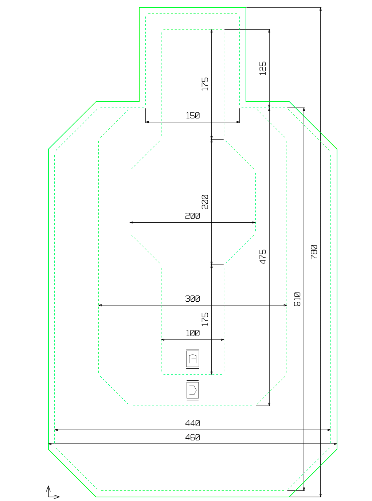

Asociácia LOS-SK si prostredníctvom LOS-SK kladie za cieľ vzdelávať majiteľov palných zbraní a zlepšovať ich schopnosti a návyky pri manipulácii so zbraňou a najmä ich schopnosť použiť ju v krízových situáciách.
Preteky LOS-SK sú určené pre najširšiu streleckú verejnosť a kladú si za cieľ formou športovej súťaže, pri dodržaní všetkých zásad bezpečnosti, precvičiť situácie obrannej streľby. Súťaže LOS-SK sa organizujú na klubovej, regionálnej a celoslovenskej úrovni. Zbrane aj výstroj musia zodpovedať skrytému noseniu, ktoré je pre občana dané zákonom.
Preteky sa vo všeobecnosti musia riadiť zákonom č. 190 / 2003 Z.z. v platnom znení a ostatnými súvisiacimi zákonnými normami. Pravidlá sa môžu meniť v súvislosti so zmenami príslušnej legislatívy, technickým pokrokom v oblasti výstroja a výzbroje a skúsenosťami, ktoré sa na pretekoch ukázali ako prínosné.
Viac o LOS-SK nájdete na stránke.
Na pretekoch LOS-SK sú najpoužívanejšie tieto druhy terčov. Samozrejme je možné používať aj iné terče, ktoré odpovedajú definícii terčov v Časti V.
| Číslo | štartové číslo pretekára, ak bolo pridelené pri registrácii |
| Meno a priezvisko | meno a priezvisko pretekára |
| Divízia | divízia, ktorú pretekár strieľa (Pi, MPi, Re, MRe) |
| Kategória/Skupina | kategória alebo skupina, ktorú pretekár strieľa |
| Stage | situácia, ktorej sa hodnotiaci hárok týka |
| Čas | čistý čas dosiahnutý pri riešení situácie |
| Podpis | podpis pretekára, ktorý znamená súhlas s vyplneným hodnotením |
| T1 až T9 | jednotlivé terče podľa poradia hodnotenia |
| PP | kovový terč zasiahnutý v zmysle pravidiel |
| M-P | nezásah kovového terča |
| A | zásah zóny ALFA |
| C | zásah zóny CHARLIE |
| D | zásah zóny DELTA |
| M-T | nezásah terča |
| NeT | zásah(y) neterča |
| Proc. | procedurálne chyby (penalizácia + 3 sek.) |
| Napom. | napomenutie |
| DQ | diskvalifikácia z preteku |
Po vyplnení hodnotiaceho hárku rozhodca alebo zapisovateľ spočíta počet PP, M-P, A, C, D a M-T a zapíše súčty do najspodnejšieho riadku k tomu určeného. Potom predloží hodnotiaci hárok pretekárovi ku kontrole a ten, ak s hodnotením súhlasí, ho podpíše v políčku Podpis.
Upozornenie: Pretekárom, ktorí zatiaľ nemajú skúsenosť s akčnou streľbou, streľbou za pohybu apod., sa odporúča najprv absolvovať tréning týchto zručností pod dozorom skúseného inštruktora alebo rozhodcu !!!
Pretek sa dá strieľať s minimálnymi nárokmi na strelnicu a výstroj. Stačia dva terče LOS-SK s tromi zónami (A, C a D) umiestnené vedľa seba vo vzdialenosti 1m (hranami terčov). Ľavý terč je hornou hranou vo výške 150 cm a pravý 120 cm. Vo vzdialenosti 15 m od terčov je kryt široký min. 0,5m a vysoký najmenej 180 cm s prešľapovými čiarami. Je potrebné vyznačiť palebné čiary vo vzdialenosti 5, 10 a 15 m od terčov. Strelnica musí umožňovať streľbu z miesta a za pohybu. Terče sú nepohyblivé, pohybuje sa pretekár.
Pretekár potrebuje zbraň, vhodné puzdro na skryté nosenie a dva zásobníky s minimálnou kapacitou 6 nábojov. Pre revolver stačí rýchlonabíjač na 6 nábojov. Strieľa sa zo skrytého nosenia. Na celý pretek je treba len 36 nábojov. Na každej situácii potrebuje pretekár 12 nábojov (na prvej situácii v jednom, na druhej a na tretej v dvoch zásobníkoch). Pre rýchly priebeh je nutné, aby na každú situáciu nastupoval pretekár s naplnenými zásobníky prípadne rýchlonabíjačmi.
Zbraň je na začiatku každej situácie nabitá s nábojom v komore. Výnimkou sú prvé situácie na každom stanovisku (číslo 1, 7 a 10), kedy je zásobník v zbrani, ale náboj nie je v komore. Revolvery začínajú vždy s nábojmi vo valci.
Po ukončení každej situácie dáva pretekár nabitú zbraň na povel rozhodcu do puzdra. Po absolvovaní celého stanoviska pretekár ukáže na povel rozhodcu prázdnu zbraň a po rane istoty dáva nenabitú zbraň do puzdra.
Pretek je možné realizovať naraz alebo ho rozdeliť na 3 samostatné etapy (stanovisko 1 až 3), aby pretekári nemuseli dlho čakať a strieľali častejšie a s menšími prestávkami). Je vhodné mať pripravených viac streleckých situácií, aby mohli strieľať paralelne dvaja aj viac pretekárov (postupne - vždy pri zachovaní bezpečnosti !).
Hodnotenie streľby sa vykonáva podľa pravidiel LOS-SK. Pred začatím streľby musia byť terče zalepené. Pri streľbe na telo figúry sa hodnotí zásah „hlavy“ ako MISS; uvedené neplatí na tretej situácii, kde sa strieľajú 2 výstrely na hlavu. V situácii číslo 11 je vyžadované taktické prebitie. Taktickým prebitím sa rozumie také prebitie, pri ktorom zásobník uvoľnený zo zbrane nie je zahodený na zem, ale zostáva pod kontrolou pretekára (napr. je držaný počas následnej streľby v ruke, umiestnený do vrecka, puzdra a pod.). Pre priebeh preteku platia pravidlá LOS-SK. Je úplne nevyhnutné prísne dodržiavať bezpečnostné zásady (manipulácia so zbraňou len na povel rozhodcu, mieriť vždy len smerom k terčom, dodržiavať bezpečné uhly, predpísané procedúry napr. pri tasení, pohybe atďatd.).
| Číslo situácie | SITUÁCIA A - streľba z miesta (4m) obojruč a jednoruč, silná a slabá ruka (limit - 20 sek., v zásobníkoch po 6 nábojov) |
| 1 |
|
| 2 |
|
| 3 |
|
| 4 |
|
| 5 |
|
| 6 |
|
| Číslo situácie | SITUÁCIA B - streľba za pohybu (4 - 8 m) vpred, vzad, prebitie zbrane ruka (limit - 20 sek., v zásobníkoch po 6 nábojov) |
| 7 |
|
| 8 |
|
| 9 |
|
| Číslo situácie | SITUÁCIA C - streľba z krytu (8m) v stoji, v kľaku, s taktickým prebitím (limit - 30 sek., v prvom zásobníku 6, v druhom 7 nábojov) |
| 10 |
|
| 11 |
|
| 12 |
|